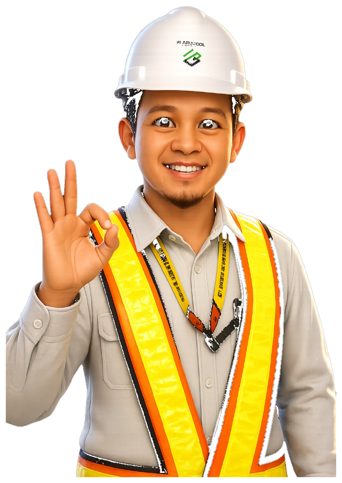
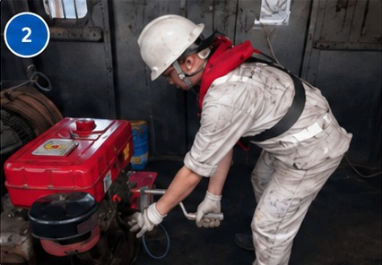
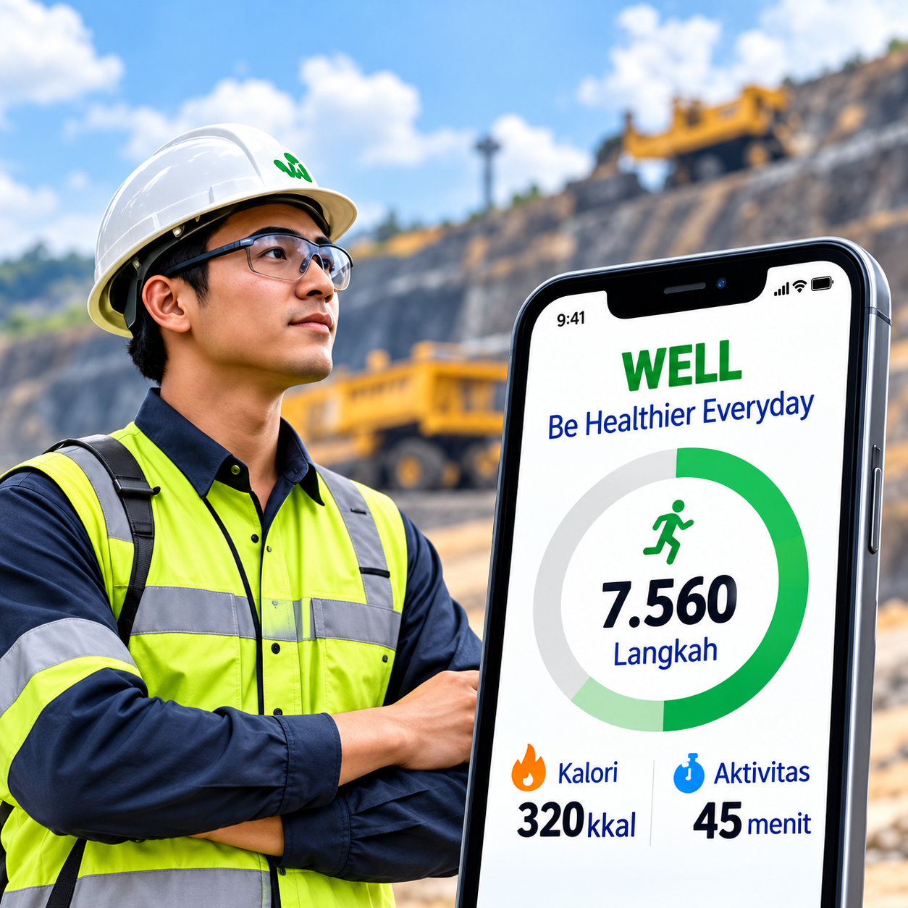

HSECM Tingkat I
Memperkuat budaya keselamatan melalui rekayasa, monitoring digital, dan kepemimpinan yang konsisten untuk stabilitas operasi tambang.

PKKMB Politeknik Sinar Mas Berau Coal · TA 2026/2027
Jimmi Idris, GM Occupational Health & Safety, PT Berau Coal.
Fig. 01 · Safety Performance Overview
Tab ini menunjukkan gambaran keseluruhan performa keselamatan, mulai dari kejadian di puncak piramida hingga indikator fondasi, serta tren KPI utama untuk membantu manajemen melihat pola risiko, kekuatan pelaporan, dan pergerakan insiden dari 2025 hingga Q3 2026.
*LSI: Lagging Severity Index (scoring dengan pembobotan jumlah × severity incident)

Kotak merah: aktivitas dengan kejadian injury.
Fig. 03 · Journey Safety Performance Overview
Peningkatan program-covered hingga Q3 belum sepenuhnya sebanding lurus dengan efektivitas pengendalian; root cause yang teridentifikasi melalui hazard menurun, sementara kategori not controlled kembali meningkat dan masih berulang pada maintenance, SOP, DOP, serta management control.
Fig. 04 · Challenge & Perkuatan Q4 2026 Overview
Perkuatan Q4 difokuskan pada empat exposure utama—ketajaman penilaian pada leading scorecard, kontrol aktivitas luar kabin, perbaikan pada kontrol critical tools, dan efektivitas RIC—dengan prinsip prioritas risiko, trigger dini, intervensi cepat, dan assurance terhadap hasil.
Fig. 05 · Implementasi Rekayasa Engineering Overview
Rekayasa engineering telah menunjukkan penurunan high-significant risk, namun efektivitas belum merata karena beberapa rekayasa masih memiliki coverage rendah dan residual risk masih terkonsentrasi pada hauling road maintenance, maintenance unit, serta pengisian BBC.
Fig. 06 · Health & Fatigue Management Overview
Implementasi WELL telah berjalan secara massif dan perkuatan Q4 akan difokuskan pada kualitas pemanfaatan, kepatuhan input kesehatan, pengendalian roster dan overshift, serta deteksi–intervensi fatigue agar kesiapan kerja benar-benar terjaga sejak pra-operasi hingga pasca operasi.

Fig. 07 · Highlight & Next to Do Q4 2026 Overview
Prioritas Q4 diarahkan pada penutupan K1 sebagai critical gap—terutama collision dan maintenance—serta penguatan K2 yang masih berulang melalui intervensi berbasis exposure, perbaikan monitoring & control pekerjaan, dan percepatan engineering serta pemenuhan teknologi.
Klik di luar, Escape, atau i untuk menutup